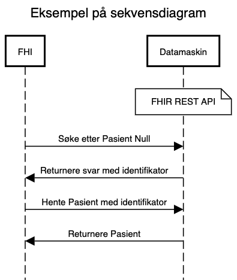

Den gode implementasjonsguide
Denne veilederen er under arbeid - versjon 0.3
- Plan: Publisere en versjon 1.0 i løpet av
20212022.
- Issues: https://github.com/HL7Norway/best-practice/issues?q=is%3Aissue+is%3Aopen+label%3ADGI (tag = DGI)
Om Den gode implementasjonsguide (DGI)
Denne veilederen gir krav og beste praksis for en HL7 FHIR implementasjonsguide (IG) for å sikre kvalitet, god lesbarhet og forståelse av innholdet.
IGer kan være gjenstand for normering av Direktoratet for e-helse, derfor er det brukt uttrykk som SKAL, SKAL IKKE, BØR, BØR IKKE, KAN, KAN IKKE i henhold til RFC 2119 slik at en IG kan testes for konformitet mot denne veilederen.
Det oppfordres om å komme med tilbakemeldinger og forslag om innhold og utforming av denne veilederen - bruk issues med label DGI.
HL7 best practice for FHIR ImplementationGuide
- HL7 sin IG Review liste
- HL7 IG best practice
Anvendelse
Implementasjonsguiden må være klar på hvilke anvendelser den er ment å løse. Den må fortelle om den er basis for videre profilering, eller skal brukes som den er.
Forretningsprosess og samhandlingsform
Hvis IGen er beregnet på en spesiell samhandlingsform (datadeling/API, dokument, meldingsutveksling) BØR den inneholde ett eller flere sekvensdiagram som forklarer informasjonsflyten mellom aktørene (forretningsprosess).
Foreslåtte notasjoner:
- UML sekvensdiagram
- TIPS: sequencediagram.org - enkelt verktøy som kan versjonshåndteres
- BPMN

Kontekst og historikk
IG-en SKAL oppgi hvem som aktivt forvalter den.
IG-en BØR ha med informasjon om hvordan den ble tatt frem, for eksempel
- om initiativet bak, i hvilket prosjekt/program som utviklet den
- om den er en del av et større arbeide
Profiler
Alle profiler SKAL være med som StructureDefinition.
Tilstrekkelig beskrivelse SKAL inkluderes i StructureDefinition.description.
Utvidelser (extensions)
Alle utvidelser SKAL være med som StructureDefinition.
Tilstrekkelig beskrivelse SKAL inkluderes i StructureDefinition.description.
Kodeverk
Alle ValueSet BØR være med i IG-en. ValueSet som er spesielle for IG-en SKAL være med, mens gjenbruk/eksterne KAN refereres til hvis kilden kan ansees som stabil.
Alle CodeSystem og NamingSystem KAN være med, hvis ikke SKAL det oppgis referanser.
Eksempler
IG-en SKAL inneholde eksempler på bruk av profilene i form av JSON og/eller XML.
Eksemplene BØR være realistiske med utgangspunkt i anvendelsen, men trenger ikke å være utfyllende.
Versjonering
Publisering
IG-en BØR være publisert åpent og fritt tilgjengelig på internett. IG-en SKAL publiseres åpent og fritt tilgjengelig hvis den er gjenstand for (fremtidig) normering.
Forvaltning og kontaktinformasjon
Det SKAL oppgis kontaktinformasjon til ansvarlig forvalter og hvordan man kan melde inn ønsker om endringer, feil i dokumentasjon og lignende. Slike tilbakemeldinger BØR være tilgjengelig for alle i form av en issue tracker, eksempelvis på GitHub eller annet egnet verktøy.
Avsluttet forvaltning
Hvis en publisert IG ikke lenger aktivt forvaltes BØR den merkes tilsvarende, og BØR inneholde en referanse til eventuelle andre (aktivt) forvaltede IG-er for tilsvarende eller lignende anvendelse.
Krav for IG som spesifiserer et API
Queries
IG-en SKAL dokumentere hvilke queries som støttes. Det SKAL dokumenteres hvilke standard-queries (i følge HL7 FHIR) som ikke støttes.
Operations
IG-en SKAL dokumentere hvilke operations som støttes.
Pakkettering
IG-er som benyttes for API BØR publiseres som en pakke. [Diskusjon: Bør dette gjelde alle IG-er?]